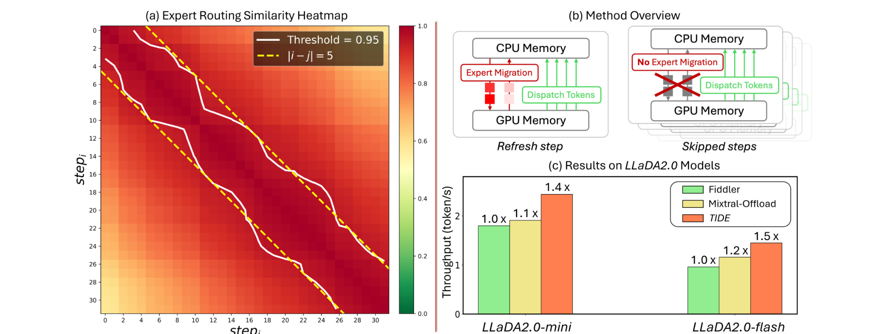
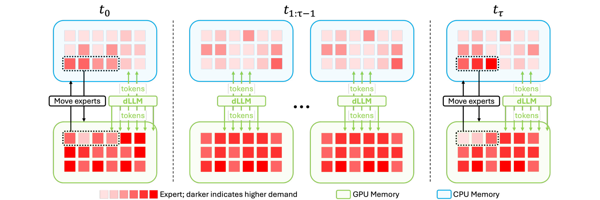
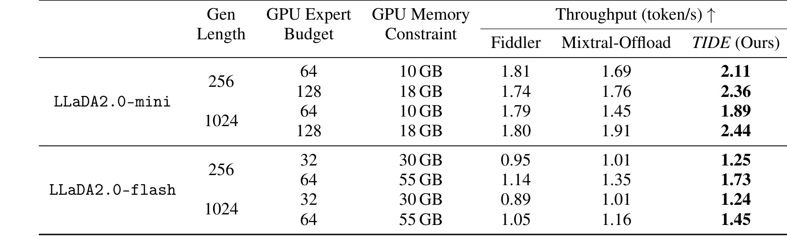
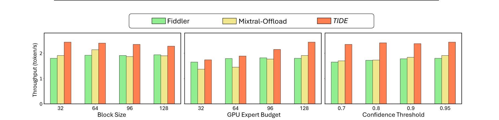

TIDE：TIDE: Efficient and Lossless MoE Diffusion LLM Inference with I/O-aware Expert Offload
这里精读一篇最近公开的论文《TIDE: Efficient and Lossless MoE Diffusion LLM Inference with I/O-aware Expert Offload》。中文可以叫《面向 MoE 扩散大模型的 I/O 感知专家卸载推理系统》。
论文链接：arXiv:2605.20179
作者：Zhiben Chen, Youpeng Zhao, Yang Sui, Jun Wang, Yuzhang Shang
机构/团队：UCF / Mobi.AI / Rice
公开日期：2026-05-19，来源：arXiv cs.CL，arXiv ID：2605.20179。
代码/项目页：PDF 首页标注 Project Code，但本轮未进一步核验到独立仓库链接。
0. 导读
这篇论文值得看，是因为它把“扩散语言模型”和“MoE 专家卸载”两个正在变热但还没有完全工程化的方向放在了一起。扩散 LLM 不像自回归模型逐 token 解码，而是在一个 block 内多步去噪；MoE 又把参数切成专家，推理时只激活一部分。二者结合后，显存放不下所有专家，CPU-GPU I/O 会成为瓶颈。TIDE 的判断是：扩散去噪相邻步的 expert routing 并不是完全随机变化，而有明显时间稳定性，因此不必每一步都刷新 GPU 上的专家集合。
这篇论文和每日关注范围的关系很直接：它不是孤立的模型技巧，而是围绕推荐、检索、RAG、Agent 或大模型服务链路里的真实约束展开。下面按问题、方法、图表、实验和工程判断展开。
1. 背景与问题
传统 AR-MoE 推理优化主要围绕 token-by-token 的专家预测、prefetch 和 offload 展开，但 diffusion LLM 的计算形态不同：一个 block 里的多个 mask token 会经过若干 denoising steps，专家选择随步数变化，却在局部时间窗口内保持相似。若直接套用 AR-MoE 的每步迁移策略，GPU-CPU 之间会产生大量重复 I/O，吞吐被专家权重搬运拖住。
这对推荐和搜索系统也有实际意义。大规模个性化生成、商品文案理解、会话推荐和复杂 RAG 服务越来越依赖多模型或 MoE 服务，如果模型部署只能靠堆显存，成本会迅速失控。TIDE 提供的不是新训练方法，而是推理系统层面的调度思想：利用模型内部激活模式的稳定性，把“每步都最优”改成“一个短窗口内足够好”。
论文的问题定义很清楚：在单 GPU-CPU 资源受限系统里，如何让 MoE diffusion LLM 保持原始输出质量，同时降低专家迁移次数和 CPU 计算开销。它不改变模型权重，不引入蒸馏，也不牺牲 routing 的动态性，而是寻找 refresh interval tau，让 GPU expert miss rate 与 expert migration 之间取得折中。
更抽象地看，论文要回答的是一个资源分配问题：在模型能力、上下文信息、候选预算、延迟预算或业务约束都有限时，怎样把计算放到最有价值的位置。这个问题和推荐系统里的召回预算、排序链路、广告出价、用户长期价值建模是一类问题，只是本文落在 LLM 推理 场景。
2. 核心方法
TIDE 的第一步是观测 expert activation pattern。论文用相似度热图和激活统计说明，同一个 block 的相邻 denoising steps 会激活高度相似的专家集合；相比完全随机或每步大幅切换，这种稳定性意味着 GPU 常驻专家可以在多个去噪步内复用。这个观察是整个系统成立的前提。
第二步是 interval-based expert refresh。系统把 block 内的去噪过程切成 refresh steps 与 skipped steps：在 refresh step，根据当前高需求专家集合更新 GPU-resident experts；在 skipped step，不再进行完整的专家迁移，而复用上一次 placement。这样做减少了 I/O，但会提高 miss rate，因此不能简单把 interval 设得越大越好。
第三步是 I/O-aware scheduling。论文将专家迁移成本和 CPU fallback 计算成本建模，寻找能最小化总 latency 的 refresh interval。直觉上，tau 太小接近每步刷新，I/O 过重；tau 太大虽然迁移少，但 GPU miss 多，CPU 计算增加。TIDE 的价值在于把这个折中显式化，而不是只给一个经验阈值。
最后，TIDE 的输出保持 lossless。因为它没有改模型参数，也没有裁掉专家，只是调度专家放置与 CPU/GPU 计算路径，所以论文把它定位为 training-free optimization。对工程部署来说，这比需要重训或量化校准的方案更容易插入现有 serving pipeline。
我在阅读时更关注模块之间的接口，而不只是模块名称。本文的共同特点是：把原本隐含在工程经验里的决策变量显式化，例如阈值、预算、缓存、维度、控制信号或刷新间隔。显式化之后，系统才有可能被校准、复现、迁移和线上监控。
3. 图表解读

图 1 展示专家路由在 block 内不同 denoising steps 之间的相似度。热图越亮代表相邻步骤激活的专家集合越接近，右侧统计进一步说明稳定性不是偶然样本。它支撑了 TIDE 的核心假设：扩散式 MoE 的专家需求在短时间窗口内可预测，因此专家 placement 可以延迟刷新。

图 3 是 TIDE 的系统框架。refresh step 更新 GPU 常驻专家，skipped step 复用 placement；高需求专家被 promoted 到 GPU，低需求专家被 demoted 到 CPU。这个图把调度目标讲得很清楚：不改变 token routing 逻辑，只改变专家驻留位置和迁移时机。

表 1 是主结果。TIDE 在 LLaDA2.0-mini 和 LLaDA2.0-flash 上相对 Fiddler、Mixtral-Offload 取得更高吞吐，尤其在 GPU memory constraint 更紧时优势明显。表格说明 TIDE 的收益来自减少无效专家迁移，而不是依赖更大的显存。

图 5 做性能分析，横向看 block size、GPU expert budget、confidence threshold 对 throughput 的影响。TIDE 在不同设置下保持领先，说明 interval refresh 不是只对单一配置有效；但也能看出预算和阈值会改变收益，需要在部署环境中重新校准。
4. 实验与结果
实验主要在 LLaDA2.0-mini 与 LLaDA2.0-flash 的单 GPU-CPU 系统上进行，指标是 decode throughput，即每秒生成 token 数。论文报告 TIDE 在 mini 和 flash 上分别最高带来约 1.4x 与 1.5x 吞吐提升，并在表 1 中给出不同 generation length、GPU expert budget 与 memory constraint 下的对比。值得注意的是，它比较的是推理系统效率，不是模型准确率；lossless 的含义是目标模型输出路径没有被训练或近似替换。
这些结果的边界也要看清。论文报告的指标主要证明当前问题定义下的方法有效，但并不等价于所有生产链路都会得到同等收益。尤其是推理系统论文要区分 decoding time、end-to-end latency 和服务端吞吐；RAG/Agent 论文要区分 benchmark score、真实用户满意度和长期维护成本；工业推荐/平台论文要区分离线回放、短期 A/B 和长期生态影响。
5. 我的理解
我认为 TIDE 的真正启发在于：扩散 LLM 的系统优化不能直接复用 AR LLM 的所有经验。AR 解码关注 token 序列依赖和 KV cache，扩散解码还多了 block 内去噪轨迹；MoE 又让“参数在哪里”变成一等公民。TIDE 把专家激活看作具有时间局部性的工作负载，这和推荐系统中的热 item cache、热用户分群缓存很像。只要访问模式有稳定性，就可以用延迟刷新换 I/O。
从研究脉络看，这类工作共同说明一个趋势：大模型和推荐系统都在从“单模型效果”走向“系统级可控”。以前我们常把模型能力看成主要变量，现在越来越多论文开始处理部署预算、缓存策略、风险校准、候选预算、跨城市迁移、长期状态记忆等问题。这些问题不一定在排行榜上最耀眼，却更接近真实业务系统里的主要瓶颈。
6. 工程启发与复现建议
复现时可以先从公开 LLaDA2.0 MoE 模型或同类 diffusion MoE 推理代码开始，记录每个 denoising step 的 expert id set，再计算 Jaccard/similarity。若相邻步稳定性不明显，TIDE 的收益会下降。最小实现不必立刻做完整 optimizer，可以先固定 tau 为 2/4/8 做网格实验，统计 GPU miss、CPU fallback、expert migration 次数和吞吐。线上接入时要把模型服务的 batch size、PCIe/NVLink 带宽、CPU 内存带宽放进调度模型。
如果要把这篇论文纳入自己的技术栈，我建议先做最小闭环，而不是一次性复现全部实验。先找到一个可观测的瓶颈指标，再实现论文中最核心的决策变量，最后用分桶指标看收益是否来自目标机制。只有当收益在关键分桶上成立，才值得继续投入完整系统实现。
7. 局限与风险
- 只在 LLaDA2.0-mini/flash 这类模型上验证，其他 diffusion MoE 架构是否有同样路由稳定性需要重新测量。
- 收益依赖 CPU-GPU I/O 成本结构；在多 GPU、大显存或 NVLink 环境下，瓶颈可能转移，interval refresh 的边际收益会变小。
- 调度模型需要真实硬件参数，论文给出思想但生产系统仍要做 profiling，否则 tau 选择可能偏离最优。
- lossless 不等于无风险，专家 miss 引发的 CPU fallback 会改变延迟尾部，对实时服务的 P99 影响需要单独看。
- 推荐/广告线上服务常有多租户和突发流量，单模型实验不能直接外推到混部场景。
8. 后续跟进
- 跟进是否开源 Project Code，并核对 scheduler 与 expert placement 的实际实现。
- 在 batch size 变化、不同 PCIe/NVLink 拓扑下复现实验，检查吞吐和 P99 延迟。
- 对比最新 diffusion LLM serving 框架，看 TIDE 是否能与 KV/cache、prefill 优化组合。
- 评估 MoE diffusion 模型在个性化生成、搜索摘要和推荐解释服务中的成本收益。
9. 精读补充：部署迁移检查
如果把 TIDE 放进真实 serving 系统，第一件事不是实现 interval refresh，而是先做一份专家访问画像。需要记录每个 request、每个 block、每个 denoising step 的 top expert set，统计相邻 step 的 overlap、跨 block 的 overlap、不同 prompt 长度下的 overlap，以及 batch 内请求混合后 overlap 是否仍然存在。论文图 1 证明了 LLaDA2.0 系列上的局部稳定性，但这不等于所有 MoE diffusion LLM 都有同样性质。若模型训练时 routing entropy 很高，或者 serving 时 batch 里混合了完全不同领域的请求，专家复用窗口会缩短，tau 的最优值会明显变化。
第二件事是拆分延迟来源。TIDE 的收益来自减少 GPU-CPU expert migration，但线上 latency 还包括请求排队、tokenization、prefill、CPU fallback、GPU kernel launch、跨进程通信和输出流式返回。若只看 average throughput，很容易高估收益。更稳的评估方式是同时报告 mean、P50、P95、P99，以及 miss rate 和 migration count 的分桶曲线。尤其推荐系统里的实时服务常被 P99 约束，而不是被平均吞吐约束；如果 interval 变大让少量请求出现更多 CPU fallback，平均吞吐提升也可能被尾延迟抵消。
第三件事是考虑和其他系统优化的组合。TIDE 本身不处理 KV cache、prefix cache、batch scheduler 或专家量化；这些优化在生产环境里通常同时存在。一个合理实验矩阵应包括：原始 offload、TIDE only、TIDE + expert quantization、TIDE + batch-aware placement、TIDE + prefix/cache reuse。只有在组合环境里仍能保持收益，才说明 TIDE 不是和现有优化互相替代。对推荐/搜索场景的迁移也类似：如果 MoE dLLM 用于商品摘要、query rewrite、用户意图解释，常见输入会有模板和领域集中度，这可能增强专家复用；如果用于开放式客服，输入分布更散，收益可能变弱。
最后要注意运维可观测性。TIDE 引入 tau、GPU expert budget、confidence threshold 等新旋钮，线上必须有自动报警：当专家 miss rate 高于训练画像、CPU fallback 持续升高、迁移带宽接近上限时，需要自动降级到更保守的 refresh 策略。否则这个系统优化会从“无损加速”变成一个隐藏的延迟风险源。